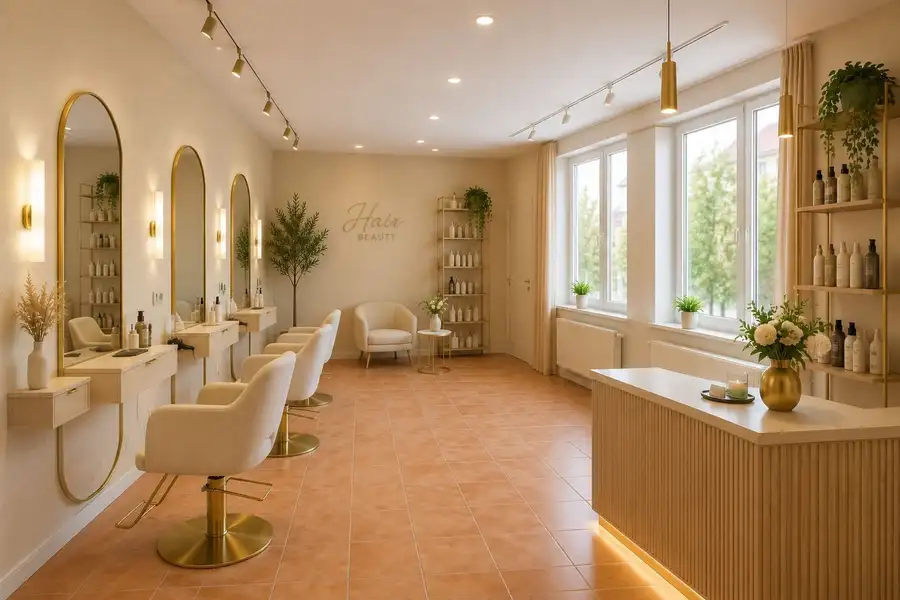

Aktuálna ponuka
6 nehnuteľností, predovšetkým rodinné domy, chaty a chalupy, pozemky. Každá má vlastnú stránku s fotkami, popisom a mapou.
Prezrieť ponukuRadovan LehutaRealitný maklér
Realitný maklér · MAXIS REAL s.r.o.
Predaj a prenájom nehnuteľností · Trnava, Dobrá Voda, Špačince

 Chata, drevenica, zrubNové10
72 500 €MAXIS REAL: TOP NA PREDAJ: Rekreačná chata po kompletnej rekonštrukcii – Dobrá Voda | Terasy | Smart ovládanie | Pokoj v srdci prírody
Dobrá Voda
45 m²
Hľadáte miesto, kde si oddýchnete od ruchu mesta, načerpáte energiu v prírode a zároveň budete mať komfort moderného bývania? Potom Vás táto ponuka…
DomNové10
450 000 €Maxis real: na predaj: exkluzívna novostavba: 5-izbový rodinný dom s dvojgarážou a terasou v Špačinciach – len 5 minút od Trnavy
Špačince
577 m²
Ponúkame na predaj výnimočný 5-izbový rodinný dom, ktorý spája modernú architektúru, veľkorysý priestor a potenciál vytvoriť si bývanie presne podľa…
Dom10
599 000 €MAXIS REAL: NA PREDAJ: NOVOSTAVBA 5-izbového rodinného domu s dvojgarážou v Trnave – Kamenáč
Trnava
180 m²
Lokalita: Trnava – Kamenáč Úžitková plocha: viac ako 180 m² + terasa cca 25 m² + povala približne 100 m² - zastavaná plocha 250 m² Pozemok: 620 m²…
Chata, drevenica, zrubNové10
72 500 €MAXIS REAL: TOP NA PREDAJ: Rekreačná chata po kompletnej rekonštrukcii – Dobrá Voda | Terasy | Smart ovládanie | Pokoj v srdci prírody
Dobrá Voda
45 m²
Hľadáte miesto, kde si oddýchnete od ruchu mesta, načerpáte energiu v prírode a zároveň budete mať komfort moderného bývania? Potom Vás táto ponuka…
DomNové10
450 000 €Maxis real: na predaj: exkluzívna novostavba: 5-izbový rodinný dom s dvojgarážou a terasou v Špačinciach – len 5 minút od Trnavy
Špačince
577 m²
Ponúkame na predaj výnimočný 5-izbový rodinný dom, ktorý spája modernú architektúru, veľkorysý priestor a potenciál vytvoriť si bývanie presne podľa…
Dom10
599 000 €MAXIS REAL: NA PREDAJ: NOVOSTAVBA 5-izbového rodinného domu s dvojgarážou v Trnave – Kamenáč
Trnava
180 m²
Lokalita: Trnava – Kamenáč Úžitková plocha: viac ako 180 m² + terasa cca 25 m² + povala približne 100 m² - zastavaná plocha 250 m² Pozemok: 620 m²…
 Pozemok9
200 000 €MAXIS REAL: TOP NA PREDAJ: Investičný rekreačný pozemok s murovanou chatkou a studňou – Kamenáč, Trnava
Trnava
3857 m²
Hľadáte miesto, kde si oddýchnete od ruchu mesta, budete pestovať vlastné ovocie čizeleninu alebo uvažujete o investícii do perspektívneho pozemku v…
Pozemok9
200 000 €MAXIS REAL: TOP NA PREDAJ: Investičný rekreačný pozemok s murovanou chatkou a studňou – Kamenáč, Trnava
Trnava
3857 m²
Hľadáte miesto, kde si oddýchnete od ruchu mesta, budete pestovať vlastné ovocie čizeleninu alebo uvažujete o investícii do perspektívneho pozemku v…
 Byt8
235 500 €Maxis real: na predaj: 3-izbový byt s balkónom a garážovým státím | miko – Mikovíniho, Trnava
Trnava
3-izbový71.39 m²8. podlažie
Ponúkame na predaj priestranný a prakticky riešený 3-izbový byt v projekte MIKO na Mikovíniho ulici v Trnave, situovaný v novšom bytovom dome…
Byt8
235 500 €Maxis real: na predaj: 3-izbový byt s balkónom a garážovým státím | miko – Mikovíniho, Trnava
Trnava
3-izbový71.39 m²8. podlažie
Ponúkame na predaj priestranný a prakticky riešený 3-izbový byt v projekte MIKO na Mikovíniho ulici v Trnave, situovaný v novšom bytovom dome…

Komerčné priestoryNové2 Cena dohodouMAXIS REAL: NA PRENÁJOM: Obchodný / prevádzkový priestor 34 m² v Trnave – Sladovnícka ulica Trnava 34 m² Hľadáte reprezentatívny priestor pre svoje podnikanie vo výbornej lokalite sjednoduchou dostupnosťou a bezproblémovým parkovaním? Táto ponuka môže…Tomuto výberu zatiaľ nezodpovedá žiadna ponuka. Napíšte mi, čo hľadáte.
Volám sa Radovan Lehuta. Som realitný maklér kancelárie MAXIS REAL s.r.o. a pôsobím predovšetkým v lokalitách Trnava, Dobrá Voda a Špačince (Trnavský kraj).
6 nehnuteľností, predovšetkým rodinné domy, chaty a chalupy, pozemky. Každá má vlastnú stránku s fotkami, popisom a mapou.
Prezrieť ponukuTrnava, Dobrá Voda, Špačince a okolie. Ponuku si môžete prezrieť podľa lokality.
Nehnuteľnosti v lokaliteOdhad trhovej ceny, príprava prezentácie, obhliadky, zmluvy a odovzdanie nehnuteľnosti.
Dohodnúť stretnutieKaždý špendlík je jedna nehnuteľnosť z mojej ponuky. Kliknite a pozrite sa.
© prispievatelia OpenStreetMap
Na čo sa pýtate najčastejšie, skôr než sa stretneme.
Odhad trhovej ceny vychádza z aktuálnych ponúk a predajov v lokalite, nie z cenníkových tabuliek. Podmienky Vám poviem pri prvom telefonáte.
Najprv obhliadka a odhad ceny, potom príprava prezentácie (fotografie, popis, inzercia), obhliadky so záujemcami, rezervačná zmluva, kúpna zmluva, návrh na vklad do katastra a odovzdanie nehnuteľnosti. O každom kroku viete vopred.
Najrýchlejšie cez WhatsApp alebo telefón. Termín stretnutia alebo obhliadky dohodneme podľa Vás.